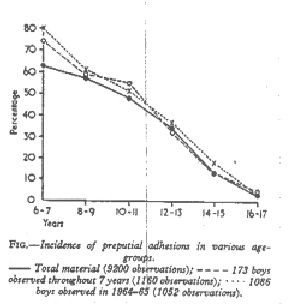

THE CIRCUMCISION REFERENCE LIBRARY
Jakob Øster
From the Department of Paediatrics,
Central Hospital, Randers, Denmark
There are three decisive dates in the history of the prepuce: the year 1713 BC, in which Abraham is said to have been circumcised as sign of the pact with Jehovah (Speert, 1953), the year 43 AD when Paul, at a religious meeting in Jerusalem resolved that it was the circumcision of the heart and not of the flesh that was the true way to salvation (Hand, 1950), and the year 1949 AD when Gairdner published work which, for the first time, presented facts illustrating the normal development of the prepuce. The two first events are of world-wide historical significance and have influenced the circumstances of millions of individuals. While the third event seems to have made no such impression as yet.* [CIRP note: The incidence of male neonatal circumcision has declined substantially in the English-speaking nations since the publication of this article in 1968.]
Many facts have still to be elucidated. What is smegma? Do sebaceous glands exist?—on the glans or the prepuce (Krompecher, 1932)? Is smegma carcinogenic and, if so, due to which components? What part does hygiene of the preputial space play in various diseases (Saltmacher, 1960; Kalcev, 1964)? What is the incidence of circumcision in the various groups of the population (Came, 1956; MacCarthy, Douglas, and Mogford, 1952; Osmond, 1953)? Why is cancer of the penis practically never observed in circumcised men (Bletch, 1950; Clemmensen, 1965)? Is there a connexion between cancer of the uterine cervix and circumcision in the sexual partners of these women? Is the low incidence of cervical cancer of the uterus in Jewish women due to racial differences, circumcision in the males, or general hygienic procedures (Bleich, 1950; Boldt, 1959)? May circumcision lead to ulcerative meatitis and secondary narrowing of the external urethral meatus (Berry and Gross, 1956; Morton, 1963)? Is the mortality in connexion with circumcision, approximately 16 male infants annually in England and Wales in the period 1942-47, fallen with the introduction of modern anaesthesia and the prophylaxis of infection and haemorrhage (Speert, 1953)?
The development of the prepuce starts when the embryo is about 65 mm, and it covers the glans when the fetus is approximately 100 mm. (Broman, 1946; Hamilton, Boyd. and Mossman, 1952). The inner surface of the prepuce and the surface of the glans receive a common epithelium which separates at about the time of birth or later, possibly much later (Deibert, 1933; Gairdner, 1949). This common epithelium is mistakenly termed 'adhesions' and, similarly, the separation is termed, also unfortunately, 'resolution of adhesions'.
Separation results from keratinization of the cells under the influence of androgen (Burrows, 1944), probably in a similar way to separation of the eyelids (Andersen, Ehlers, and Matthiessen, 1965), a highly complicated biological process. How and why this separation occurs is outside the scope of this article the object of which is to investigate when it occurs. Gairdner (1949) found that the prepuce can only be retracted completely in 4% of newborn boys, in 54% the external meatus could just be seen, while in 42% the tip of the glans could not even be seen. At the age of 6 months, the prepuce could still not be retracted in 80%, and the corresponding figures at the ages of 1, 2, and 3 years were 5, 20, and 10% respectively. Gairdner added that, in 200 schoolboys between 5 and 13 years, the prepuce could not be retracted completely in 20%.
Gairdner's material originated from a population which was partially circumcised. The object here was to investigate the incidence of preputial 'adhesions', phimosis, and smegma production in an unselected group of Danish schoolboys.
Material and Methods
As school medical officer in a town, the author had the task of examining a large population of children annually. The prepuces had not been the object of interest or of manipulation by doctors or parents, because in Denmark such a tradition has never existed.
The material comprises 9545 observations on the state of the prepuce in 1968 schoolboys aged 6-17 years, examined annually for up to 8 years from the academic year 1957-58 till 1964-65. A smaller fraction of the material, 173 boys, was examined annually for 7 years from 1958-59 till 1964-65. Finally, continued observations on 1086 schoolboys from the last year of the investigation 1964-65, were made on the incidence of preputial ‘ adhesions’, as control material for the other two groups.
The term phimosis implies that tightness prevents the prepuce from being retracted by gentle manipulation. The term tight prepuce indicates that the prepuce can be retracted, though with slight difficulty, so that it is possible to observe whether adhesions are present or not. The presence and extent of preputial adhesions could obviously only be assessed in those cases where no phimosis was present.
Results
[CIRP note: Øster presents information about the incidence of "phimosis", "tight foreskin", and "adhesions" in separate tables. This presentation has been found to be confusing to many. One must add the percentage incidence of these various conditions together to obtain the total number of boys in each age group with partially or completely non-retractable foreskins.]
Table I shows that phimosis was found in 4% of all observations, but with a diminishing incidence throughout the years, from 8% in 6-7 year-olds to 1% in 16-17 year-olds. in addition, tight prepuce was present in 2%.
TABLE I
Incidence of Phimosis, Tight Prepuce, and Smegma in Various Age-groups
Phimosis Tight Prepuce Smegma
(yr.) No. % No. % No. %
6-7 46/591 8 6/ 545 1 5/ 545 1
8-9 86/1374 6 24/1288 2 13/1288 1
10-11 96/1662 6 34/1566 2 33/1566 2
12-13 77/2523 3 70/2446 3 155/2446 6
14-15 34/2744 1 33/2710 1 225/2710 8
16-17 6/ 651 1 9/ 645 1 53/ 645 8
Total 345/9545 4 176/9200 2 484/9200 5
|
In the 9200 observations where no phimosis was present and where the preputial space could thus be inspected, smegma was present in 5% the incidence increasing from 1% in the 6-7 year-olds, to 8% in the 16-17 year-olds. Production of smegma appears to increase in quantity at the age of 12-13 years. Whenever smegma was noted at an examination, the boy concerned was instructed to retract the foreskin gently and to wash the preputial space in the bath. The above figures thus reflect both the incidence of smegma, and the efficacy of hygienic procedures. Nevertheless, it was clear that the presence of smegma was uncommon in 6-7 year-old boys.
Table II shows that preputial adhesions were present in 33% of all schoolboys who did not have phimosis, with a diminishing incidence from 63% in 6-7 year-olds to 3% in 16-17 year-olds. No adhesions were noted amongst 95 17-year-old boys.
TABLE II Incidence of Preputial Adhesions in Various Age-groups Age-groups(yr.) No. % 6-7 345/545 63 8-9 749/1288 58 10-11 745/1566 48 12-13 840/2446 34 14-15 362/2710 13 16-17 17/645 3 Total 3058/9200 33 |
 FIG. - Incidence of preputial adhesions in various age-groups - Total material (9200 observations);--- 173 boys observed through 7 years (1160 observations); 1086 boys observed in 1964-65 (1052 observations).
Table III shows the degree of adhesions. The incidence of pronounced adhesions is shown to be greater the younger the boys, while in the older age-group a slight degree of adhesions is often all that is to be found. Analysis of that part of the material consisting of 173 boys examined annually for 7 years in succession showed, as mentioned, a similar decrease in the incidence of adhesions throughout the years as in the total material. The various degrees of severity were also distributed as in the total material, and the incidence of phimosis of 49 out of 1209 observations, or 4%, is the same as that in the total material. If the 173 boys are considered individually, phimosis was observed at one time or another and disappeared spontaneously in 11; 9 of these had phimosis on entering school and in 2 it began at 10 years. In 3 further boys (2% phimosis occurred in the course of school life at the ages of 10, 10, and 12 years, respectively, and was such that surgery was required, which was undertaken at the ages of 14, 11, and 13 years, respectively. Thus, in 14 out of the 173 boys or (8%) phimosis was observed at one time or another during school life. Only 4 out of the 173 boys had had their prepuces dilated by their general practitioners before school age, and in all 4 of these the prepuce developed normally during school life, either as a result of, or despite, the treatment administered. None of the boys had been circumcised before school age, Similar conditions also prevailed in the total material.
TABLE III
Degree of Preputial Adhesions in Various Age-groups
Degree of Adhesions
Age- Exten- Exten- Isolated
groups ding to ding Involving Thread-
(yr.) External Middle Corona like
Meatus of Glans Bands Total
6-7 43 100 107 95 345
8-9 34 207 260 248 749
10-11 21 130 269 325 745
12-13 15 128 279 418 840
14-15 4 36 112 210 362
16-17 0 2 5 10 17
Total 117 603 1032 1306 3058
Percent 4 20 34 43
|
Discussion and Conclusions
Phimosis is seen to be uncommon in schoolboys, and the indications for operation even rarer if the normal development of the prepuce is patiently awaited. When this policy is pursued, in the majority of cases of phimosis, it is seen to be a physiological condition which gradually disappears as the tissues develop. There is, however, a possibility that unphysiological secondary phimosis may occur in connexion with attempts to retract the prepuce, because tissue damage and scar formation may then occur. It is worth noting that the three boys mentioned in whom operation was required, only developed phimosis after several years of school, raising the possibility that the phimosis in these cases may have been iatrogenic, a sequel to the attempts at retraction in the preceding years, despite the author's attempts at gentleness.
The common epithelium of the glans and the prepuce separates gradually and spontaneously in the course of childhood, a process that may not be complete until the age of 17. The rate of fall in the incidence of adhesions throughout school life is constant, providing no evidence for the epithelial separation being of hormonal origin as a result of puberty. The production of smegma increases from the age of 12-13, but our actual figures for the incidence of smegma can only be of limited significance, as the boys received regular instruction about preputial hygiene. The facts presented hare are in entire agreement with the comment made by Sir James Spence of Newcastle upon Tyne (1964):
'The anatomists have not studied the form and the evolution of the preputial orifice . . . they do not understand that Nature does not intend it to be stretched or retracted . . . What looks like a pin point opening at 7 months will become a wide channel of communication at 17 . . . Nature is a possessive mistress, and whatever mistakes she makes about the structure of the less essential organs such as the brain and stomach, In which she is not much interested, you can be sure that she knows best of the genital organs.'
Summary and Conclusions
From 9545 observations of the state of the prepuce in 1968 schoolboys aged 6-17 years, examined annually for up to eight years, the following was concluded.
Physiological phimosis is a rare condition in schoolboys, and it has a tendency to regress spontaneously: operation is rarely indicated. Clumsy attempts at retraction probably cause secondary phimosis, which then requires operation.
Preputial non-separation ('adhesion') occurs frequently, but separation of the epithelium takes place gradually and spontaneously as a normal biological process in the course of school life and is concluded about the age of 17.
Production of smegma increases from the age of about 12-13 years. Neither this nor hygiene of the prepuce present any problems if the boys are regularly instructed.
REFERENCES
Andersen, H., Ehlers, N., and Matthiessen, M.E. (1965). Histo-chemistry and development of the human eyelids. Acta ophthal. (Kbh.), 43, 642.
Berry, C.D., Jr., and Cross, R. R. Jr. (1956). Urethral meatal caliber in circumcised and uncircumcised males. Amer. J. Dis. Child., 92, 152.
Bleich A.R. (1950). Prophylaxis of penile carcinoma. J. Amer. Med. Assoc., 143, 1054.
Boldt, W, (1959). Uber erste Erfahrungen mit der routinemassingen Beschneidung des Neugeborenen in Deutschland und Gedankan zur Krebsprophylaxe. Geburtsh. u. Frauenheilk., 19, 624.
Broman, I. (1946). Beitrage zur Kenntnis der Embryonalentwicklung der ausseren Geschlechtsorgane beim Menschen, Lunds Universitets Arsskrift, N.F., Avd. 2, Bind 42, No 12.
Burrows, H. (1944). The union and separation of living tissues as influenced by cellular differentiation.Yale J. Biol. Med., 17, 397.
Carne. S. (1956). Incidence of tonsillectomy, circumcision, and appendicectomy among R.A.F. recruits. Brit. Med. J. 2, 19.
Clemmesen, J. (1965). Statistical studies in the aetiology of malignant neoplasms. Acta path. microbiol. scand., Suppl. 174, 322 and 350.
Deibert G.A. (1933). The separation of the prepuce in the human penis. Anat. Rec. 57, 387.
Gairdner, D. (1949). The fate of the foreskin. A study of circumcision. Brit. med. J., 2: 1433.
Hamilton, W.J., Boyd, J.D., and Mossman, H.W. (1952). Human Embryology, 2nd ed., p. 251. W. Heffer, Cambridge.
Hand E. A. (1950). History of circumcision. J. Mich. med. Soc., 49, 573.
Kalcev, B, (1964). Circumcision and personal hygiene in school boys. Med. Offr., 112, 171.
Krompecher, S. (1932). Zur Histologie der Alsonderung des Smegma Praeputii, Anat. Anz. 75, Erg.-Heft. 170.
MacCarthy. D., Douglas, J.W.B., and Mogford, C. (1952). Circumcision in a national sample of 4-year-old children. Brit. med. J., 2, 755.
Morton, H.G. (1963). Meatus size in 1000 circumcised children from two weeks to sixteen years of age. J. Fla med. Assoc., 50, 137.
Osmond T.E. (1953). Is routine circumcision advisable? J. roy. Army med. Cps. 99, 254.
Saltmacher, F. (1960). Sozialhygienische Betrachtungen zu einer routinemassigen Zirkumcision mannlicher Sauglinge. Dtsch. Gesundh.-Wes., 15, 1217.
Speert, H. (1953). Circumcision of the newborn. Appraisal of its present status. Obstet and Gynec., 2, 164.
Spence, J. (1964). On circumcision. Lancet. 2, 902.
http://www.cirp.org/library/general/oster/